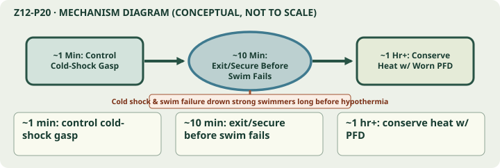

Z12-P20 · Extreme environments · New manuscript
Understand the cold-water 1-10-1 physiology: cold shock, swim failure and hypothermia
Understand the rapid physiological timeline of cold-water immersion so immediate survival actions focus on breathing and flotation first.
When it applies · Ice breakthroughs, capsized boats, cold-river falls and frigid coastal or marine immersion.
Equipment · Fastened USCG-approved life jacket (PFD) whenever on or near cold water.

Actions
- **First ~1 minute (Cold Shock):** Sudden cold immersion triggers an involuntary gasp reflex, rapid uncontrolled hyperventilation and blood-pressure spike—without a fastened life jacket keeping your mouth above water, inhaling water causes immediate drowning.[X02, X03, X04]
- **First ~10 minutes (Cold Incapacitation / Swim Failure):** Frigid water cools arm and leg nerves and muscles rapidly, destroying finger grip and swimming power long before core hypothermia occurs—use these minutes to self-exit or secure flotation/rescue rather than attempting a long swim.[X02, X03]
- **Roughly 1 hour+ (Core Hypothermia):** Core body temperature drops progressively over tens of minutes to an hour or more depending on clothing, size and water temperature—if trapped in water with flotation, minimize movement and conserve heat while awaiting rescue.[X02, X03]
Failure recognition · Believing strong swimming ability prevents drowning in 40°F water without a life jacket, or panicking and trying to swim a quarter mile to shore during cold shock.[X02, X03, X04]
Verify · Recite the three cold-water phases (breathing control -> brief functional exit window -> heat conservation) and verify PFD wear on cold water.[X02, X03, X04, ED]
Stop or change course · Treat ANY immersion in water below 70°F (especially below 50°F) as a time-critical drowning and hypothermia emergency requiring immediate 911/USCG activation.[X02, X03, T02]
Evidence and editorial notes
- T02 · American Red Cross · First Aid Steps (current web edition)
- Section: First Aid Steps > Call 9-1-1 · Conditions: Lay emergency response to unresponsiveness, abnormal breathing or severe bleeding
Support: Activate EMS and get needed equipment. Follow dispatcher directions and act within training.
Limitations: Remote locations may delay EMS arrival, requiring sustained stabilization after activation. · Conflicting evidence: None; aligns with NPS-E.
Editorial note: Mandates early emergency activation and dispatcher adherence. · Specialist reviewer: EMS and wilderness medicine
Primary source · checked 2026-11-24 - X02 · Minnesota DNR · Cold Water Safety (current web edition)
- Section: Cold Water Safety > Cold Shock, Swim Failure and Hypothermia · Conditions: Immersion in water below 70°F (especially below 50°F / winter ice water)
Support: Cold-water immersion triggers immediate involuntary gasp and hyperventilation (cold shock in the first 1–3 minutes), followed by rapid swimming failure (within ~10–15 minutes) before core hypothermia develops; wearing a fastened life jacket keeps the airway above water.
Limitations: Strong swimmers drown rapidly from cold shock and muscle incapacitation without flotation. · Conflicting evidence: Refutes myth that hypothermia is the only immediate cold-water killer.
Editorial note: Core physiological evidence for Z12 ice-breakthrough and maritime immersion cards. · Specialist reviewer: Cold-water rescue and wilderness medicine
Primary source · checked 2026-11-24 - X03 · NWS · Cold Water Hazards and Safety (current web edition)
- Section: Cold Water Hazards > 1-10-1 Principle and Survival Actions · Conditions: Unexpected immersion in cold lakes, rivers, coastal or marine waters
Support: Control breathing during initial cold shock, use the brief window of functional muscle control to self-exit or secure flotation/rescue aid, and conserve heat while awaiting rescue rather than attempting long cold swims.
Limitations: Exact individual survival minutes vary widely with body size, clothing, sea state and water temperature. · Conflicting evidence: None; aligns with MN-COLDW and USCG guidance.
Editorial note: Anchors cold-water immersion decision thresholds in Z12. · Specialist reviewer: Cold-water rescue and emergency medicine
Primary source · checked 2026-11-24 - X04 · US Coast Guard · Wearing Your Life Jacket (current web edition)
- Section: Wearing Your Life Jacket > Fit, Flotation and Cold Water · Conditions: Boating, paddling, coastal craft and icy-shoreline marine operations
Support: A properly fitted, buckled U.S. Coast Guard-approved life jacket matched to user weight and activity prevents cold-shock drowning and preserves consciousness time after capsizing—stowed jackets are rarely put on in time during sudden immersion.
Limitations: Inflatable PFDs require arming inspection and are unsuitable for high-impact whitewater or non-swimmers per label. · Conflicting evidence: None; aligns with USCG-SAFE.
Editorial note: Grounds PFD readiness and maritime abandonment cards in Z12. · Specialist reviewer: Maritime safety and search and rescue
Primary source · checked 2026-11-24
Source lineage · NWS cold water and MN DNR cold water; new manuscript · Classification · New manuscript.